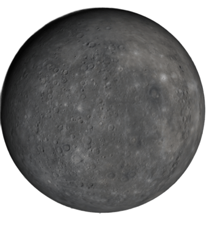
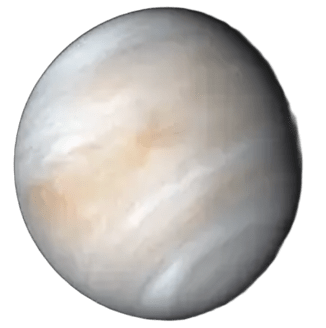
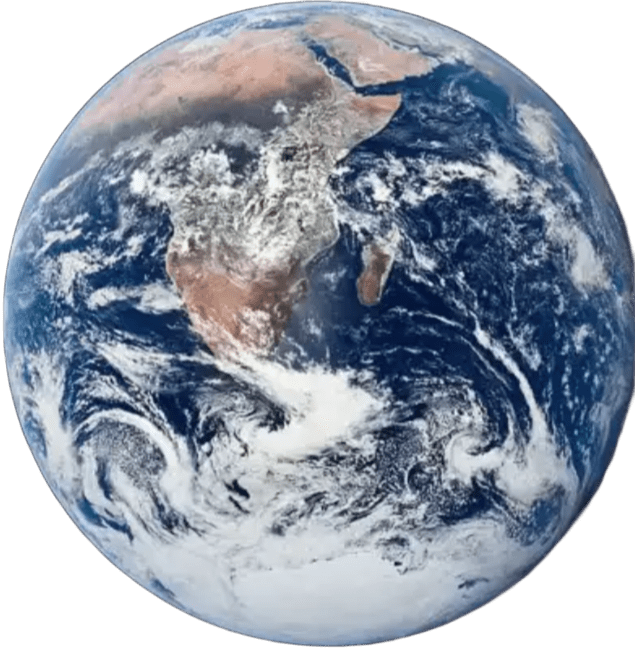
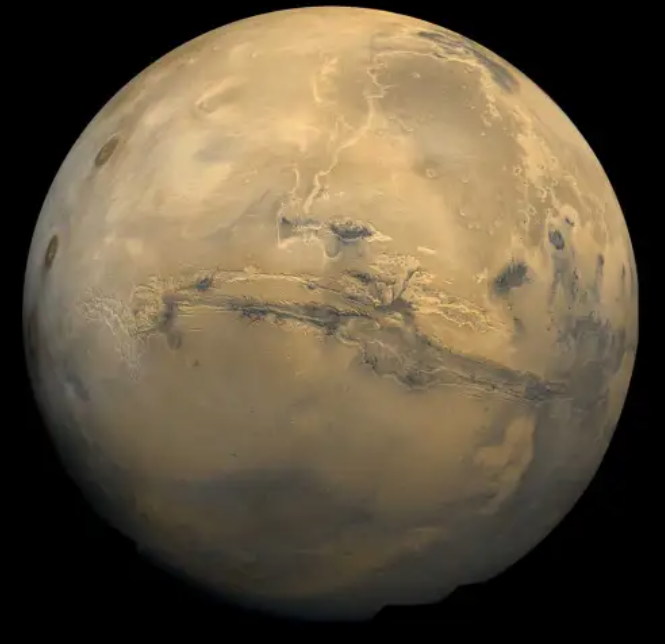
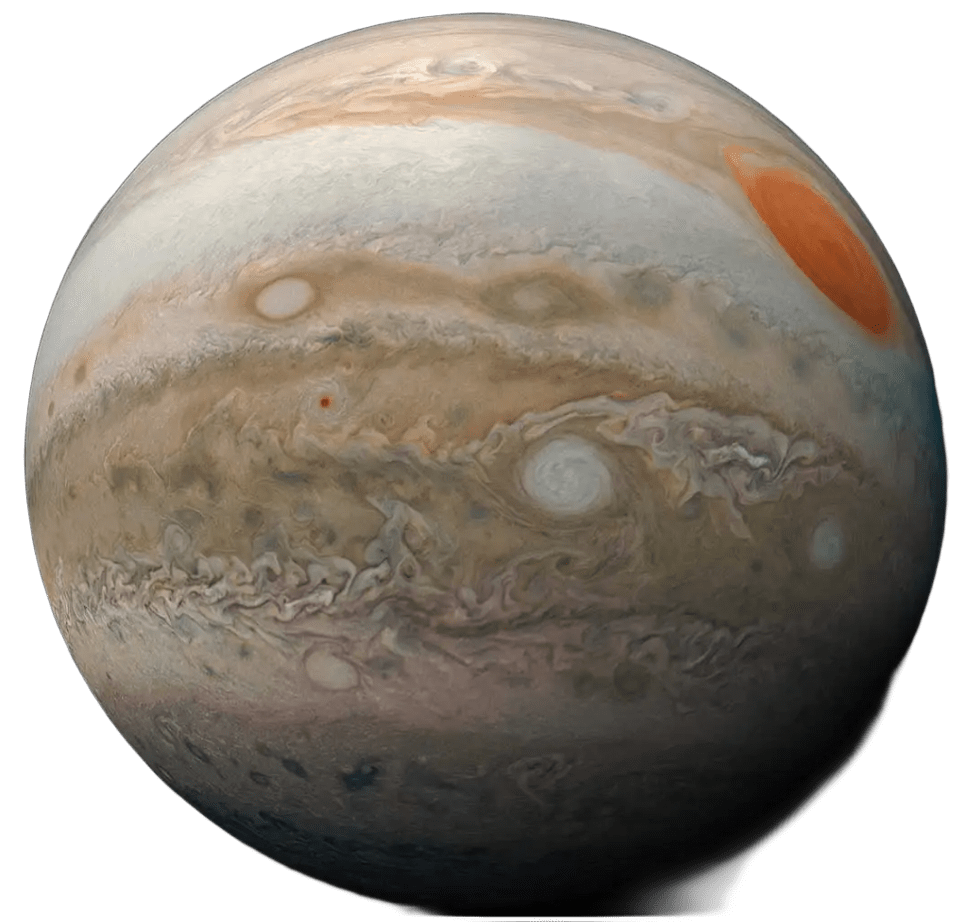
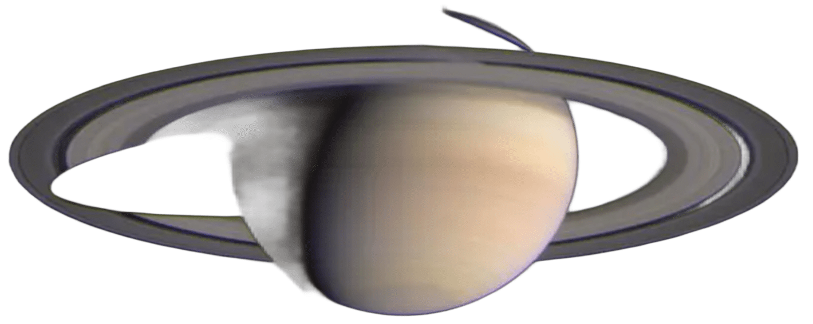
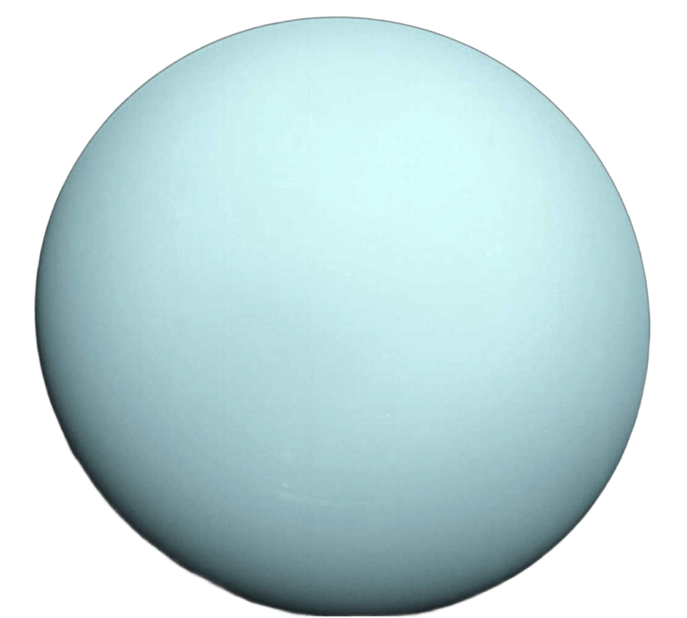
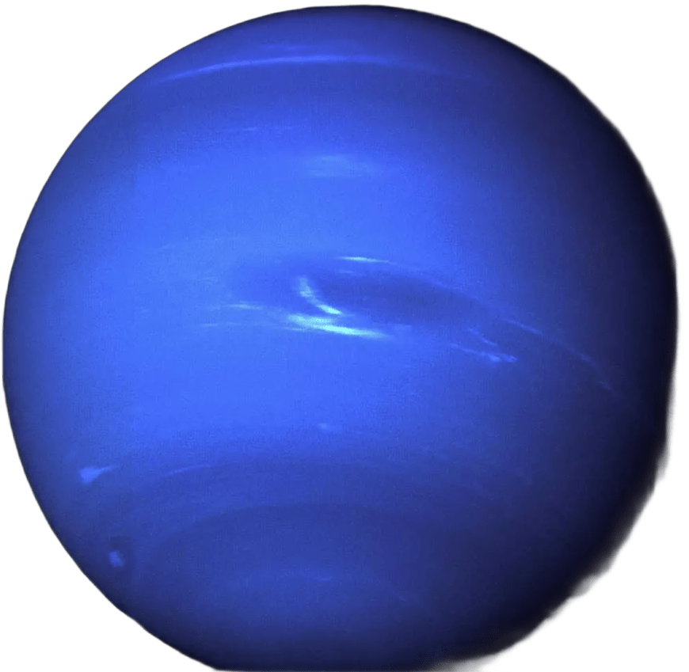
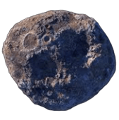

The Solar System
Introduction
The Solar System is the collection of celestial bodies that orbit around the Sun and the planets and asteroids that are bound to the gravitational pull of the Sun itself.
Planets
The Solar system contains 8 (9 including Pluto) planets that orbit around the sun.
Mercury
Mercury is the smallest planet in the Solar System and is the closest planet to the Sun. Mercury being 36 million miles away from the sun (that's 0.4 astronomical units) also has the fastest orbit around the sun as it takes 88 Earth days to orbit around the sun once. Mercury’s climate is mainly inhabitable as temperatures can be 800°F (430°C) in the day and with no atmosphere temperatures plummet to -290°F (-180°C). Mercury’s composition is mainly metals like silicon with its core being the most iron-rich planet in the Solar System. Its surface is mainly filled with sulfur, potassium, sodium and many other elements. Mercury appears as a grey planet without much variation in color.

Quick Note: Mercury being 0.4 astronomical units away from the sun is almost half of Earth’s distance from the sun which is one astronomical unit.
Venus
Venus is the second planet closest to the sun and is the sixth largest planet in our Solar System. Venus is known for being the hottest planet in the Solar System with average temperatures being 864°F (462°C) however higher altitudes are more habitable. Venus is often observed to be very similar to Earth as the atmospheric pressure, size, density are very similar, and both support an atmosphere. Now while terraforming Venus is way out of reach, developing technology that can provide humans with survival on Venus is possible. Venus’s distance from the sun is 67 million miles away. Venus appears as an orange-yellow planet with darker spots all around the surface.

Earth
Earth is the third planet in the solar system that is the only planet currently containing life on it. The Earth is exactly one astronomical unit away from the sun or about 93 million miles away (149.5 kilometers away). The reason why Earth is suitable for life is because it resides in a small area away from the sun known as the Habitable Zone (also known as the Goldilocks Zone). It is the zone where rocky planets could support life through habitable temperatures and water staying as a liquid (not too cold or too hot). So far, the Earth is the only planet that has life residing on the surface of it, but theories state that exoplanets far out into the universe may contain life similar to on Earth. Earth’s temperature is dependent on the latitude and longitude of said surface. And the composition of Earth’s crust and mantle are mostly rocks and minerals, it’s outer core is liquid rock (magma) that has temperatures of 4,500℉ - 5,000℉ and the inner core is a ball of solid iron with temperatures above 6,000℃. Earth appears as a blue-green planet as the oceans appear blue while land masses appear green.

Mars
Mars is the fourth planet away from the sun. It’s about 154.6 million miles (249 million kilometers or 1.66 au) away from the sun and currently is in colonization, very far into the future until terraformation takes place. Mars actually used to contain liquid water and had suitable temperatures before its magnetic field weakened and its atmosphere significantly thinned. Its climate drastically changed as temperatures plunged down and liquid water turned into ice water, turning into the planet that we see today. Mars appears as a red-orange planet with its ice caps appearing as white.

Jupiter
Jupiter is the fifth and the largest planet in the solar system. Its mass is 2.5 times more than all the other planets in the solar system combined. Jupiter is 5.2 astronomical units away from the sun (or 777.9 km). Its rotation is the shortest out of all the planets as one day on Jupiter is about 9 hours and 55 minutes. Jupiter is primarily composed of helium and hydrogen, making it a gas giant. And unlike the previous four planets, Jupiter doesn’t have a solid surface. The Great Red Spot also is present on Jupiter and was 16,000 kilometers but recent observations showed that the spot has shrinked to around 10,000 kilometers.

Saturn
Saturn is the sixth planet in the solar system and is the second-largest planet in the solar system. Just like Jupiter, Saturn is composed of helium and hydrogen, making it also a gas giant. Saturn is also one of the only planets in the solar system to have rings, but with the most visible rings. The rings are made up of fragments of ice and rocks. Scientists believe that these fragments are from pieces of celestial bodies.

Uranus
Uranus is the seventh planet in the solar system and is the third-largest planet in the solar system. Its axial tilt is about 82°, making it rotate on its side. It has the coldest atmosphere in the solar system as it is -224°C (-371.2°F). Just like Saturn, Uranus also has rings albeit much less visible and was only found through the James Webb Telescope. It’s composed of water, ammonia and methane, this makes it an ice giant.

Neptune
Neptune is the eighth and the last planet in The Solar System. It’s also the fourth-largest planet in the solar system and has rings. It’s composed of hydrogen, helium and methane which makes it a gas giant like Jupiter and Saturn. Despite being farther away from the Sun than Uranus, its temperature is not as cold as its atmosphere is around -214°C (-353°F).

Asteroid Belt
The Asteroid belt is a space in the solar system that contains millions of rocky and metallic bodies like asteroids and minor planets. The Asteroid belt is around the orbits of Mars and Jupiter as these celestial bodies are kept in the solar system due to the gravity of the Sun.

Done? Here are other Links
Back to Main Page
Back to Informational
If you are seeing this, your clock is missing a ding-dong
If you are seeing this, your calender needs a pin or two.